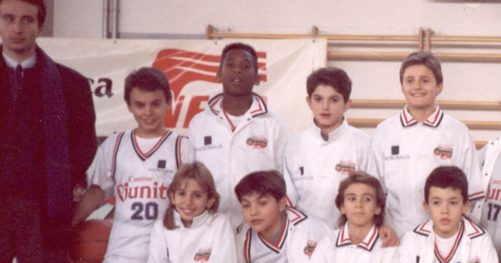
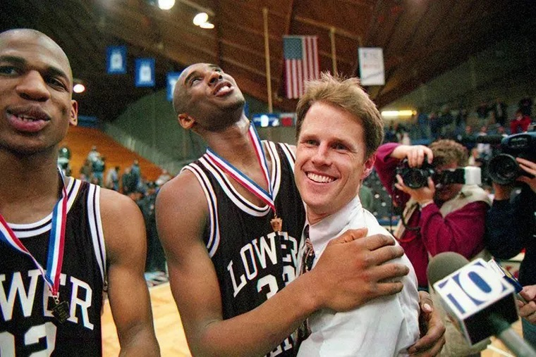
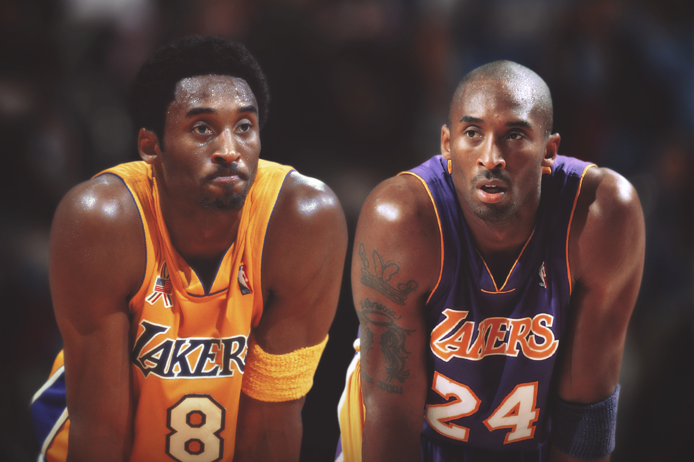

Kobe Byrant was an American Basketball player who spent his entire NBA career at the Los Angeles Lakers franchise. Standing 6ft 6 inches his playing postion was primarily a shooting guard but occasionally played games at either point guard or small forward. He is widely regarded as one of the greatest players of all time.
Kobe Bean Bryant was born August 23, 1978 in Philadelphia, Bryant was the youngest of 3 children to former NBA player Joe Bryant and Pamela Cox Bryant. His parent's named him after Japanese Kobe beef, his middle name coming from his fathers nickname "Jellybean".
Bryant first started playing basketball at the age of 3, and his favourite team were the LA Lakers. At the age of six Bryant's father retired from the NBA and moved the family to Italy to continue his basketball career. During this time, Bryant learnt fluent Italian and became accustomed to the new lifestyle. He even joined a local youth team in Reggio Emilia when he was aged 12.
Whilst living in Italy, Bryant's grandfather would mail him videos of NBA games to study. He would also return to the United States during summers to take part in summer basketball leagues. At age 13, Bryant's family moved back to Philadelphia and he enrolled in eighth grade at Bala Cynwyd Middle School.
Bryant went to Lower Merion High School in Ardmore, where he earned national recognition. He played on the varsity team becoming the first freshman to start on the team for decades. His freshman year was not a success for the team with their final record being 4-20. The following three years were very successful with the team compiling a record of 77-13. During his junior year Bryant averaged 31.1 points, 10.4 rebounds, 5.2 assists, 3.8 blocks and 2.3 steals. He was named Pennsylvania Player of the Year and earned a fourth-team Parade All-American nomination. This garnered attraction from college recruiters in the process. Duke, Michigan, North Carolina and Villanova were at the top of his list, but after Kevin Garnett went directly from High School to the first round of the 1995 NBA draft, Bryant began contemplating doing the same.
In his senior year at high school Bryant led the Aces to its first state championship for 53 years. During this run he averaged 30.8 points, 12 rebounds, 6.5 assists, 4 steals, and 3.8 blocks, leading the team to a 31-3 record. During practice before the semifinal, Bryant broke his nose during practice whilst diving for a loose ball. His coaches didn't know if he would or could play? Would he wear a mask? Could he get through the game? During the warm up he practiced with a mask, and he didn't like how it felt. He went back to the locker room, threw the mask against the wall and said "Guys, let's go to war. I'm not wearing this thing". Bryant's high school coach, Greg Downer claimed this is the moment he knew the team would win the championship.
Bryant took the decision to go directly from high school into the NBA, at the time being only the sixth player in history to do so. Bryant became the first guard to do this as all others who made the jump previously were big men.
At the 1996 NBA draft, Bryant was the 13th pick by the Charlotte Hornets. The Hornets agreed to trade the pick for LA Lakers centre Vlade Divac. Divac nearly caused the whole deal to collapse, when he initially threatened to retire rather than be traded from the Lakers. Divac eventually relented and the trade was made official on July 9, 1996.
Between 1999 and 2002 Byrant and the Lakers won three straight NBA Championships behind his partnership with one of the games most dominant players Shaquille O'Neal and the Triangle offense coached by Phil Jackson. Bryant and O'Neal didn't have the best of relationships and during the 2000-2001, disagreements between the pair came to the surface. After losing the 2004 finals to the Detroit Pistons, O'Neal was traded to the Miami Heat.
In the 2008-2009 season Bryant found himself back on top winning his fourth NBA Championship and his first without O'Neal, being chosen as finals MVP. The following season Bryant repeated the double winning a 2nd consectutive NBA Championship and finals MVP. This would be his fifth and final title, never winning the sixth to match his idol Michael Jordan.
Bryant had a 20 year NBA career which he spent entirely with the LA Lakers, retiring in the 2015-2016 season. He wore two numbers whilst playing for the Lakers. Numbers 8 & 24 both of which have been retired by the team. He was a 2 time scoring champion and an 18 time NBA All-Star. He also represented the USA National Basketball team winning Gold medals at the 2008 and 2012 Olympics and the 2007 Tournament of the Americas. He compiled a 36-0 record playing for the national team He won many other acoloades during his career and for a list of his career achievements please view our Career Achievements page.
Bryant's biggest success off the court came after his NBA career. In 2018 a short film by Bryant called "Dear Basketball", won an Academy Award for best Animated Short Film. It also won the Annie Award for Best Animated Short Subject and the Sports Emmy Award. It wasn't Bryant's only time on the screen with him also appearing on episodes of Moesha, Hang Time and Sister, Sister amongst other TV shows.
Bryant, unsuccsssfully also tried his hand at a Rap career. His high school rap group CHEIZAW was signed to Sony, who had the intentions of disbanding the group and have Bryant go solo. Bryant released the single K.O.B.E. which featured model Tyra Banks signing the hook. The song was not well recieved and Sony soon abandoned any plans for an album.
Life off the had its controversy as well. Bryant was involved in a sexual assault case in 2003, in which he was accused by a 19 year old hotel employee of rape. The incident took place the night before Bryant was due to have knee surgery. Bryant admitted adultery but denied rape. In 2004 the case was dropped by the prosecution with the accuser unwilling to testify. Bryant apologised and said "Although I truly believe this encounter between us was consensual, I recognize now that she did not and does not view this incident the same way I did. After months of reviewing discovery, listening to her attorney, and even her testimony in person, I now understand how she feels that she did not consent to this encounter." The 2 sides later settled a seperate lawsuit privately. The incident greatly impacted the public's view of Bryant, and he lost many endorsement deals as a result.
On January 26th 2020, a helicopter carrying 8 passengers and 1 pilot crashes into the side of a mountain in Calabasas, California. Amongst the passegers was Bryant, aged 41 and his 13 year old daughter Gianna (also referred to as "Gigi"). All 9 occupants were killed on initial impact. As there was no blackbox equipped on the helicopter, the offical cause of the accident is unknown but it is thought the pilot became disorientated due to rain and extreme fog weather conditions.
Bryant was survived by his wife Vanessa and three other daughters. A private funeral was held on February 7th and a public memorial on February 24th, a nod to Kobe's and Gianna's jersey numbers (2/24). In 2021 Bryant was posthumously inducted into the Basketball Hall of Fame, his wife Vanessa delivered an accptance speach on his behalf.